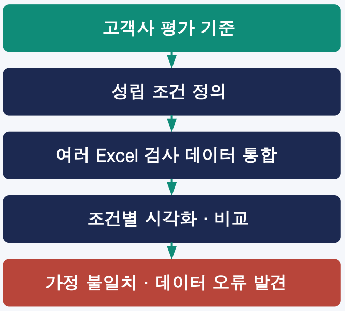
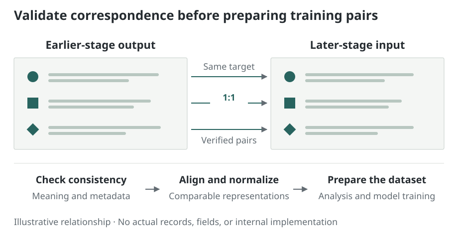

Manufacturing data validation and linkage
I linked data collected at different stages for the same target and prepared datasets for analysis and model training. The key was first checking whether the records could be validly linked.
- Work:
- one-to-one linkage across stages for the same target
- Criteria:
- metadata consistency, alignment, and normalization


Problem and context
Where the output of an earlier process becomes the input of a later process, I linked the two stages’ data one-to-one for the same target. Metadata consistency checks, alignment, and normalization produced datasets for analysis and model training.
Grouping records from similar times is different from linking the same target. Incorrect correspondence can mislead analysis and the learning objective, so I first examined data meaning and linkage conditions.
My role
I participated in metadata consistency checks, data extraction and linkage, alignment, normalization, and analysis dataset preparation. I also worked on defining the data criteria used in modeling and evaluation.
Approach


Checking meaning and correspondence
I examined whether records at different stages referred to the same target and whether the information being compared had the same meaning. Records without verified correspondence were not assumed to form valid training pairs.
Alignment and normalization
I aligned data using verified correspondences and standardized different representations for analysis. Dataset construction considered both linkage validity and data quality.
Checking analysis goals and availability at use time
I distinguished setpoints from actual observations and examined when the information needed for analysis became available. I checked the usage context so outcomes known only during training would not be treated as inputs available for real prediction.
Scope
Outputs comprised analysis/training datasets and the validation and preprocessing needed to prepare them. Quantitative performance changes, processing scale, and operational automation results are not disclosed.
The description is limited to general relationships and work objectives. It does not reproduce actual processes, products, data structures, implementations, or internal screens.